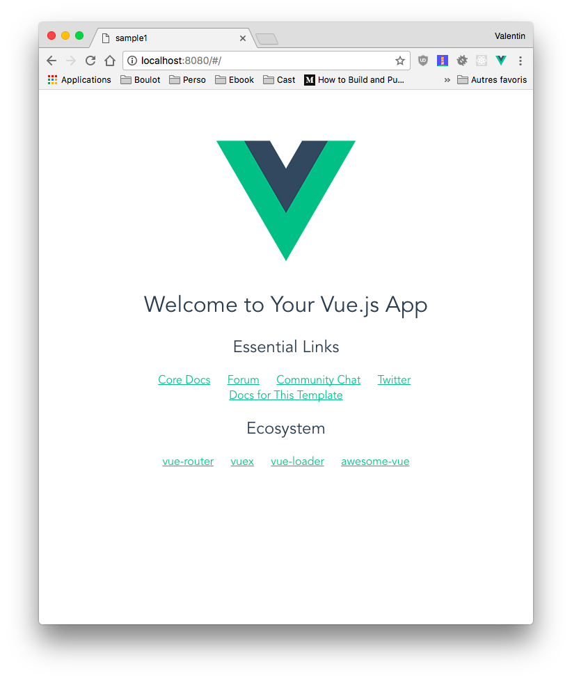
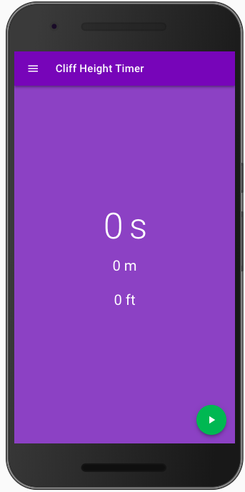

Last modified: Mon Feb 26 2018 16:21:56 GMT+0100 (CET)
Réaliser une application avec VueJS
Dans ce TP nous allons voir une autre façon d’utiliser VueJS, une façon plus moderne, celle qui utilise à 100% le modèle MVVM (Modèle Vue, Vue-Modèle) ainsi que la puissance de VueJS (.vue, VueCli, ES5).

MVVM en quelques mots
Non mais moi je connais que MVC, C’est quoi MVVM ?
MVVM est un design pattern, souvent utilisé par les bibliothèques Javascript moderne (Ionic, VueJS, ReactJS). A l’origine, MVVM a été introduit par Microsoft.
Ce pattern a spécialement été conçu pour améliorer la séparation entre les données et la vue qui les affichent. Le lien entre la vue et le modèle de données est fait par des mécanismes de binding. Le binding est un mécanisme qui permet de faire des liaisons entre des données de manière dynamiques. Ce qui veut dire que si A et B sont liés, le fait de modifier A va être répercuté sur B et inversement.
- Model : le modèle contient les données.
- View : la vue correspond à ce qui est affiché. C’est notre site Web.
- ViewModel : ce composant fait le lien entre le modèle et la vue. Il s’occupe de gérer les liaisons de données et les éventuelles conversions. C’est ici qu’intervient le binding.
L’important avec MVVM c’est que la vue ne doit jamais traiter de données. Elle s’occupe uniquement de les afficher. Le View-Model aura en charge les conversions et les accès au modèle de données.
Introduction
Maintenant que vous savez ce que c’est le MVVM, nous allons attaquer le TP pour de vrai. Nous allons réaliser « une application » à l’aide de VueJS. Cette application est purement démonstrative. Cette application calculera la hauteur d’une falaise (ou de n’importe quoi de suffisamment haut) en fonction du temps chute d’un objet jeter du haut de celle-ci.

Initialisation du projet
Avant de commencer nous allons avoir besoin de plusieurs outils :
- NodeJS
- Vue-cli
NodeJS
La première étape va être l’installation de NodeJS, la démarche est différente en fonction de votre environnement, mais pour résumer sous Windows c’est ici prendre la version CURRENT, sous OSX le plus simple c’est via Brew brew install nodejs, et sous Linux c’est via le gestionnaire de paquet apt install nodejs
Une fois installé, vous êtes prêt, votre PC est prêt à accueillir l’outil VueCLI
Vue-cli
Vue-cli est un outil qui simplifie la création d’un nouveau projet Vue-JS à partir de template fourni par la communauté.
Dans un terminal lancer la commande suivante dans le Node.js Command Prompt :
npm install -g vue-cli
Maintenant que vue-cli est installé, vous avez à votre disposition sur votre ordinateur une nouvelle commande, la commande vue
Vue-Cli intègre plusieurs templates :
- webpack : A full-featured Webpack + vue-loader setup with hot reload, linting, testing & css extraction.
- webpack-simple : A simple Webpack + vue-loader setup for quick prototyping.
- browserify : A full-featured Browserify + vueify setup with hot-reload, linting & unit testing.
- browserify-simple : A simple Browserify + vueify setup for quick prototyping.
- pwa : PWA template for vue-cli based on the webpack template
- simple : The simplest possible Vue setup in a single HTML file
Pour notre exemple nous allons prendre le Webpack, il contient tous les éléments qui seront intéressant pour réaliser notre application.
Pour créer un nouveau projet, c’est simple il suffit de lancer la commande suivante dans le Node.js Command Prompt
vue init webpack cliff-height-timer
⚠️ Attention, la commande crée le projet dans le dossier courant ! ⚠️
Le Vue-Cli est interactif il va vous poser des questions permettant de configurer votre projet :

Voilà notre projet est maintenant prêt. Place à la suite.
Installation des librairies (du projet)
Le projet que vous avez initialisé est « vide », c’est-à-dire que dans l’état il n’est pas fonctionnel. Avant de pouvoir l’afficher vous allez devoir installer les librairies (VueJS, WebPack, …). Cette étape n’est à faire qu’une seul fois sur votre poste, en effet en général on ne commit pas les fichiers « librairies » qui sont présents dans le future dossier node_module pour la simple et bonne raison que celui-ci est gros et rempli de pleins de petits fichiers (et qu’en plus ça se re-télécharge facilement depuis Internet).
Pour l’installation la procédure est la suivante :
cd cliff-height-timer/
npm install
⚠️ L’installation risque de prendre plusieurs secondes (enfin 1 ou 2 minutes).
Dans mon cas :
added 1070 packages in 49.404s
Une fois terminé votre projet est prêt à être lancé.
⚠️ Ajouter le dossier node_module dans le .gitignore
Premier lancement (l’exemple)
Les librairies étant maintenant disponible, nous allons pouvoir lancer l’exemple fourni par Vue-Cli, pour ça rien de plus simple
npm run dev
une fois cette commande lancée, votre navigateur va s’ouvrir sur un nouvel onglet contenant « l’application » de démonstration fournie par le template

Le serveur de développement
Comme vous avez pu le constater dans votre invite de commande (terminal), vous avez un serveur qui tourne. Ce serveur est un peu particulié, il n’est utilisé que dans la phase de développement il incorpore plusieurs outils permettant de simplifier la création d’application Javascript :
- Redémarrage à chaud, comprendre ici, qu’il va « patcher » votre code pour intégrer vos dernières modifications sans que vous n’ayez rien à faire (GÉNIAL !)
- Lint, analyse du code pour vous remonter les erreurs avant l’execution.
- Gestion des .vue (avec vue-loader)
Et si vous avez les outils sur votre machine il peut également :
- Créer la CSS à partir du SCSS présent dans le .vue
- Et plein d’autres usages car Webpack c’est un outil qui permet l’assemblage de différent outils
Le code source
Les sources de l’application sont dans le dossier src/ il contient l’ensemble du code source de votre application. Pour l’instant nous avons le code fourni par VueJS, au fur et à mesure des futures étapes nous allons le modifier pour le transformer dans l’application « cliff height timer ». Avant de « presque » tout remplacer nous allons modifier celui fourni pour nous familiariser avec « le serveur de dévoloppement ».
L’IDE
Pour faire du VueJS le mieux c’est d’avoir un bon IDE. Au revoir Notepad++, bonjour WebStorm? Malheureusement WebStorm est payant, si vous avez une licence tant mieux (pour les étudiants c’est gratuit).
Pour ceux qui n’ont pas de licence je vous propose d’utiliser Visual Studio Code et d’ajouter le plugin Vetur pour pouvoir éditer les .vue dans de bonne condition.
Éditer le HelloWord.vue
Pour commencer simple nous allons éditer le fichier components/HelloWord.vue, ce fichier est la « page d’accueil » de l’application fourni (nous allons voir comment dans les prochaines étapes).
Apporter des modifications dans le fichier :
- Modifier le code HTML de la page, par exemple le
h2 - Modifier le contenu de la variable (dans la partie data)
- Modifier la CSS en bas du
.vue, par exemple la couleur pour lesa
Ajout de VuetifyJS dans le projet
Nous allons commencer notre projet en intégrant VuetifyJS. Pour rappel VuetifyJS est un ensemble de composants respectant les guidelines Material Design.

Ajout de la dépendance
Comme vue en cours VueJS repose sur NodeJS, nous avons donc la possibilité de gérer nos dépendances avec npm. La première étape est donc d’ajouter la dépendance à notre projet :
npm add vuetify@0.17.5 --save
PS: Si vous allez voir un peu le site de VuetifyJS vous allez rapidement voir qu’il existe des « templates » VuetifyJS pour VueCLI. Dans ce TP découverte j’ai volontairement fait le choix de ne pas les utiliser pour que vous découvriez un peu plus en détails la construction d’une application VueJS.
Déclarer et utiliser VuetifyJS
Maintenant que la dépendance est installée nous allons pouvoir l’utiliser.
Première étape modifier le fichier src/main.js pour ajouter le code suivant :
import Vuetify from 'vuetify'
require('vuetify/dist/vuetify.min.css')
Vue.use(Vuetify)
⚠️ Ajouter le code avant :
Vue.config.productionTip = false
Voilà ! Votre application utilise maintenant VuetifyJS. Cependant, aucune de vos .vue n’utilisent de composants fourni par VuetifyJS, pour l’instant aucune différences donc ;). Pour l’instant…
Un petit détail, pour que tout soit parfait ajouter le code suivant dans le head du fichier index.html à la racine:
<link href='https://fonts.googleapis.com/css?family=Roboto:300,400,500,700|Material+Icons' rel="stylesheet">
Cette CSS est la déclaration de la « font » Roboto (font par défaut) d’Android.
Activer le Responsive
Pour que le responsive fonctionne correctement, il faut ajouter le bon viewport grace à la meta suivante :
<meta name="viewport" content="width=device-width, initial-scale=1">
Ajouter le dans le head du fichier index.html.
Transformer le template de base
Maintenant que VuetifyJS est complètement disponible vous allez pouvoir utiliser vos premiers composants.
Pour débuter nous allons remplacer le contenu du fichier App.vue pour déclarer le gabarit principal de l’application :
<template>
<v-app toolbar fill-height>
<myToolbar />
<v-content>
<v-container pa-0 fill-height>
<router-view></router-view>
</v-container>
</v-content>
</v-app>
</template>
<script>
import myToolbar from '@/components/MyToolbar'
export default {
name: 'app',
components: {myToolbar}
}
</script>
⚠️ Pour l’instant le code que vous avez remplacé n’est pas fonctionnel, pour la simple et bonne raison qu’il fait référence à un composant que vous n’avez pas encore écrit : myToolbar
Création de myToolbar
Créer un nouveau fichier nommé MyToolbar.vue dans le dossier components
<template>
<div>
<v-toolbar class="deep-purple" clipped-left app>
<v-toolbar-side-icon dark @click.stop="drawer = !drawer"></v-toolbar-side-icon>
<v-toolbar-title @click="goHome" class="white--text">{{ $t("title") }}</v-toolbar-title>
</v-toolbar>
</div>
</template>
<script>
export default {
name: 'myToolbar',
data: function () {
return {
drawer: false
}
},
methods: {
goHome () {
window.location.hash = '/'
}
}
}
</script>
Voir le changement
Voilà, vous avez atteint la première étape. Vous pouvez lancer votre application en faisant :
npm run dev
Organisation
Nous allons légèrement modifier l’arborescence pour rendre le projet « plus simple », créer un dossier src/views. Celui-ci contiendra « nos vues » c’est à dire les différentes pages de notre application.
Déplacer le fichier src/components/HelloWorld.vue dans src/views/HelloWorld.vue. Une fois fait vous pouvez éditer le fichier src/router/index.js pour y mettre le contenu suivant :
import Vue from 'vue'
import Router from 'vue-router'
import HelloWorld from '@/views/HelloWorld'
Vue.use(Router)
export default new Router({
routes: [
{
path: '/',
name: 'HelloWorld',
component: HelloWorld
}
]
})
Le Routeur
Votre application est maintenant fonctionnelle cependant comme vous le constatez, vous avez pour l’instant qu’une « seule page », le fichier ressemble à quelques chose comme ça :
import Vue from 'vue'
import Router from 'vue-router'
import Home from '@/views/Home'
Vue.use(Router)
export default new Router({
routes: [
{
path: '/',
name: 'Home',
component: Home
}
]
})
⚠️ Ne copiez pas le contenu garder le votre ⚠️
C’est dans le tableau « routes » que vous allez ajouter les différents « chemin » qui conduiront à vos différentes pages. Pour l’instant la seule qui existe c’est la « home ».
Ajout du multilangues (i18n)
Quand on conçoit une application il est important de gérer certains points dès le début, le multilangues est l’un de ces points. Dans le développement le multilangues s’appelle « l’internationalisation » abrégé en i18n, où 18 représente le nombre de caractères entre le i et le n dans « internationalisation »
Pour gérer l’internationalisation VueJS propose une librairie appelée vue-i18n, avant de pouvoir l’utiliser il faut l’installer via :
npm add vue-i18n --save
Une fois installé, nous allons pouvoir gérer nos textes en plusieurs langues (et sans se prendre la tête).
Ajout du fichier de langue
Nous allons maintenant ajouter notre code qui gèrera le i18n. Pour ça nous allons créer un dossier i18n dans le dossier src
mkdir src/i18n
Puis dans le dossier, nous allons ajouter le fichier index.js suivant :
import VueI18n from 'vue-i18n'
import Vue from 'vue'
Vue.use(VueI18n)
const messages = {
en: {
'title': 'Cliff Height Timer'
},
fr: {
'title': 'Cliff Height Timer'
}
}
export const i18n = new VueI18n({
locale: getLanguage(),
fallbackLocale: 'en',
messages
})
function getLanguage () {
try {
let l = navigator.language.split('-')
return l[0]
} catch (err) {
return navigator.language
}
}
ℹ️ Étudier le code précédent :
messagescontiendra vos prochains textes dans les différentes langues.getLanguageest une fonction qui retourne la langue actuellement définie pour le poste de client.i18nest l’objet représentant la fonctionnalité i18n.
Déclarer à notre application la présence du i18n
Maintenant que nous avons créé notre « module » i18n, nous devons indiquer à notre application qu’elle doit s’en servir. Pour ça nous allons éditer le fichier src/main.js
Pour ajouter :
[…]
import {i18n} from './i18n' // <== Ajouter l’import en haut du fichier.
[…]
router,
i18n, // <== Ajouter i18n entre router et templates déjà présent dans votre code.
template: '<App/>',
[…]
J’ai volontairement ellipsé le code source… Je ne vais pas tout vous dire…
Déclarer un nouveau texte
Notre internationalisation est maintenant prête à être utilisée. Nous allons l’utiliser dès maintenant dans le fichier /components/MyToolbar
- Remplacer la chaine
Cliff height timerpar =>{{$t("title")}} - Le titre doit maintenant s’afficher. Et c’est normal la clef « title » est déjà présente dans le fichier :
i18n/index.js, modifier le titre pour la langue « fr ».
ℹ️ $t est un objet qui permet d’accéder aux textes actuellement chargés pour la langue de l’utilisateur.
Tester
Vérifier en relançant votre application que le titre à bien été modifié :
npm run dev
Les .vues
Maintenant que nous avons la base de notre projet, nous allons commencer à créer les différents fichiers Vue’s.
Contrairement à l’exemple par défaut, nous allons mettre nos fichiers .vue dans un nouveau dossier src/views. Première étape créer le dossier :
mkdir src/views/
Profitons en également pour supprimer le fichier src/components/HelloWorld.vue qui est maintenant inutile.
La page : Accueil
Nous allons commencer par la page d’accueil, celle-ci doit ressembler à :

Pour faire cette vue, vous allez avoir besoin des éléments suivants :
Étape de la création :
- Créer le fichier
Home.vuedans le dossiersrc/views/ - Créer la structure de votre Vue :
<template>
<v-container fill-height class="middle-centered deep-purple lighten-1">
<div class="home">
<h1>{{ time }} s</h1>
<h3>{{ m }} m</h3>
<h3>{{ ft }} ft</h3>
</div>
<v-btn v-on:click="action" v-bind:class="state_class" dark fixed bottom right fab>
<v-icon>{{ state_icon }}</v-icon>
</v-btn>
</v-container>
</template>
<script>
export default {
name: 'home',
data: () => {
return {
running: false,
time: 0,
m: '0',
ft: '0'
}
},
computed: {
state_icon () {
// Retourne l’icone pour le FAB
if (this.running) {
return 'stop'
} else {
return 'play_arrow'
}
},
state_class () {
// Retourne la class pour le FAB
if (this.running) {
return 'red'
} else {
return 'green'
}
}
},
methods: {
action () {
// Gestion du start / stop
this.start = new Date().getTime()
if (!this.running) {
this.running = true
this.timerId = setInterval(() => {
this.compute()
}, 10)
} else {
this.running = false
clearInterval(this.timerId)
this.saveHistory({time: this.time, m: this.m, ft: this.ft})
}
},
saveHistory (item) {
// Sauvegarde dans l’historique
let history = JSON.parse(localStorage.getItem('history'))
if (!Array.isArray(history)) {
history = []
}
history.unshift(item)
localStorage.setItem('history', JSON.stringify(history))
},
compute () {
let fallTime = new Date().getTime() - this.start
let height = 16 * Math.pow((fallTime / 1000), 2)
let numberDigits = 1
if (height < 1) {
numberDigits = 2
}
this.time = (fallTime / 1000).toFixed(2)
this.ft = height.toFixed(numberDigits)
this.m = (height / 3.2808).toFixed(numberDigits)
}
}
}
</script>
<style scoped>
.home{
text-align: center;
}
.home > h1, .home > h2, .home > h3 {
color: white;
}
</style>
- Déclarer la vue dans votre
router/index.js. Retirer la vue/existante pour y mettre la votre. Exemple :
[…]
import Home from '@/views/Home'
[…]
// Code existant
},
{
path: '/',
name: 'Home',
component: Home
}
]
- Tester votre code :
$npm run dev
La page : À Propos
Voilà le rendu de « la page » que vous devez réaliser :

- Créer le fichier
src/views/About.vue
<template>
<v-container>
[…]
</v-container>
</template>
<script>
export default {
name: 'about'
}
</script>
⚠️ N’oubliez pas tous les textes doivent-être dans le fichier i18n/index.js et être utilisés avec par exemple {{$t("label")}}
- Ajouter dans
router/index.jsle code pour pouvoir accèder à votre Vue.
✋ Vous avez ajouté votre nouveau fichier, mais pour l’instant votre application ne contient pas de menu. Nous allons en ajouter un pour pouvoir naviguer entre les pages.
Ajout du : Drawer
Dans le monde « mobile », un menu s’appelle un Drawer (un tiroir). Nous allons donc créer un Drawer. Pour ça nous allons avoir besoin des ressources suivantes:

Création :
- Pour ça, créer le fichier
/src/components/Drawer.vue
<template>
<div>
<v-toolbar class="deep-purple" />
<v-list dense>
<template v-for="(item, i) in items">
<v-divider dark v-if="item.divider" :key="i"></v-divider>
<v-list-tile :href="item.action" :key="i" v-else>
<v-list-tile-action>
<v-icon>{{ item.icon }}</v-icon>
</v-list-tile-action>
<v-list-tile-content>
<v-list-tile-title>
{{ item.text }}
</v-list-tile-title>
</v-list-tile-content>
</v-list-tile>
</template>
</v-list>
</div>
</template>
<script>
export default {
name: 'drawer',
data: function () {
return {
items: [
{ icon: 'home', text: this.$t('drawer.home'), action: '#/' },
{ icon: 'history', text: this.$t('drawer.history'), action: '#/history' },
{ icon: 'help', text: this.$t('drawer.about'), action: '#/about' },
{ divider: true },
{ icon: 'pets', text: this.$t('see_on_github'), action: 'https://github.com/c4software/Cliff-Height-Timer-VueJS' }
]
}
}
}
</script>
- Déclarer les différents textes dans le fichier
i18n/index.js
Maintenant que notre composant est terminé, nous devons l’utiliser. Nous allons l’utiliser dans le premier composant que nous avons écrit src/components/MyToolbar.vue, modifier le pour intégrer les modifications suivantes :
<template>
<div>
// Nouveau
<v-navigation-drawer v-model="drawer" clipped fixed app>
<myContentDrawer />
</v-navigation-drawer>
// Reste du code déjà présent
</template>
<script>
import myContentDrawer from "@/components/Drawer" // <== Ajouter l’import
export default {
name: "myToolbar",
components: {myContentDrawer}, // <== Ajouter la déclaration du composant
[…]
- Tester votre application :
npm run dev
La page : Historique
Notre application est maintenant fonctionnelle. Nous avons la capacité de calculer des chutes, d’afficher les informations sur l’application, et bonus dans plusieurs langues !
Mais je pense qu’une application n’est jamais vraiment complète sans une notion d’historique. Pour ça nous allons créer une nouvelle « vue »
- Créer le fichier
src/views/History.vue - Créer la correspondance entre la Vue et le chemin dans le fichier
router/index.js - N’oubliez pas également d’ajouter l’élément dans le menu Drawer.
- Les textes doivent également être mis dans la partie i18n
Pour réaliser la vue Historique nous allons devoir sauvegarder les différents résultats. Pour ça nous allons utiliser le Localstorage, avant d’allez plus loin je vous propose un peu de lecture sur le localStorage :
La propriété localStorage vous permet d'accéder à un objet local Storage. Le localStorage est similaire au sessionStorage. La seule différence : les données stockées dans le localStorage n'ont pas de délai d'expiration, alors que les données stockées dans le sessionStorage sont nettoyées quand la session navigateur prend fin — donc quand on ferme le navigateur.
Source: https://developer.mozilla.org/fr/docs/Web/API/Window/localStorage
⚠️ Petite subtilitée, vous ne pouvez pas stocker de tableau (array) dans le localStorage nous allons devoir utiliser un JSON.
Sauvegarder un élément dans le localStorage
localStorage.setItem('historique', JSON.stringify([]))
Lire un élément dans le localStorage
JSON.parse(localStorage.getItem("history"))
Démarche
- Adapter le code de
Home.vuepour sauvegarder le résultat dans un tableau d’historique à chaque fois que l’utilisateur enregistre une nouvelle chute. - Écrire le code de la page
History.vuepour afficher les valeurs enregistrées.- Utiliser les variables computed de VueJS pour retourner la liste de l’historique (exemple).
Ressources utiles :
Vu que c’est la 3ème vue que vous faites, je pense qu’il n’est plus nécéssaire que je vous fournisse du code.
Distribuer vos sources
Voilà votre application est maintenant terminée bravo 👏👏. Cependant vous ne savez pas encore comment packager/distribuer votre application. Pour ça rien de plus simple il vous suffit de faire
npm run build
Cette commande va compiler votre application et vous fournir une version que vous allez pouvoir héberger comme n’importe quel site Internet (sur un serveur Apache par exemple).
Le résultat de la compilation est dans le dossier dist/
- Héberger le résultat sur un serveur Apache.
Ajouter un manifest
Nous allons maintenant ajouter la dernière pierre à notre édifice, le fichier Manifest. Ce fichier décrit le fonctionnement du site Web en tant « qu’application », une fois que ce fichier est en place votre navigateur le lira et adaptera son fonctionnement poru qu’il se rapproche d’une application (Comme une APK).
Pour ça nous allons utiliser deux site :
Le manifest d'une application web fournit des informations concernant celle-ci (comme son nom, son auteur, une icône et une description) dans un document texte JSON. Le but du manifeste est d'installer des applications sur l'écran d'accueil d'un appareil, offrant aux utilisateurs un accès plus rapide et une expérience plus riche.
Les manifests font partie d'un ensemble de technologies appellées les applications web progressives (progressive web apps). Il s'agit d'applications web qui peuvent être installées sur la page d'accueil d'un appareil sans que l'utilisateur ait à se rendre dans une boutique d'applications. De plus, une fois installées, elles peuvent être utilisées sans connexion internet et sont capables de recevoir des notifications push.
Source: Mozilla.org
- Générer les icones ainsi que le fichier Manifest
- Télécharger le manifest.json et le mettre dans le dossier
static/faire la même chose pour les icones. - Éditer le fichien
index.htmlpour ajouter :
<link rel="manifest" href="./static/manifest.json">
- Vous pouvez builder votre application et la mettre à jour sur votre serveur Web.
npm run build
- Tester l’application depuis votre Téléphone Android.